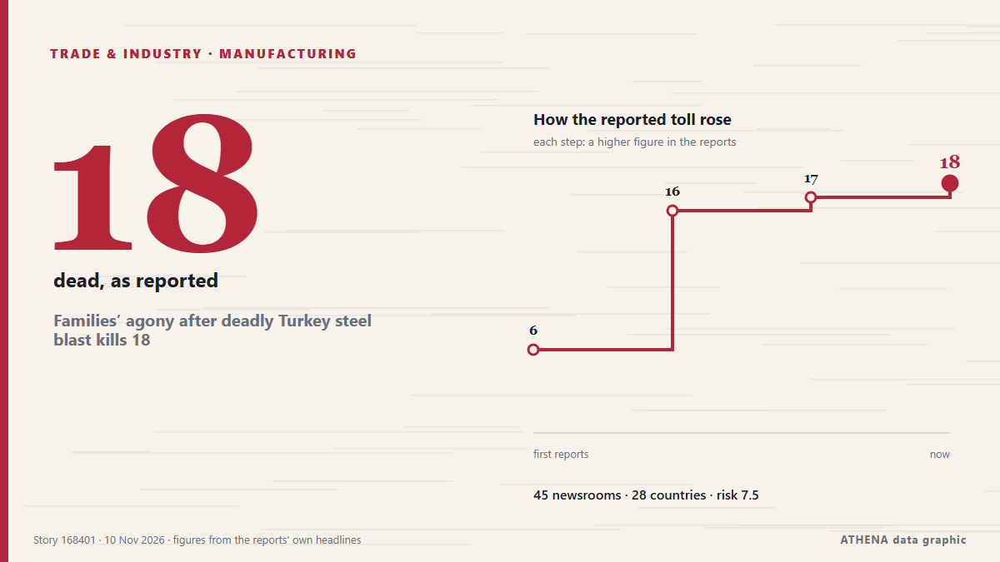

Families’ agony after deadly Turkey steel blast kills 18

An explosion at a steel plant in Izmir, western Türkiye, killed six people and injured 13 others, on Monday, as rescue teams searched for 10 people trapped under rubble. from Daily Sabah
Reported independently by 47 outlets in 29 countries since 9 Nov, first by Daily Sabah; coverage is fading. ATHENA rates the risk high (7.0/10), driven mainly by the severity of the harm described and its geographic and sector reach. Confidence is 90% (high), with 47 independent outlets corroborating it and an average source reliability of 77%. Outlets by country: Turkey (9), Russia (4), Azerbaijan (3). Coverage: 9 Nov to 9 Nov, 11 hours.
Why it matters: Disruption to trade, industry or infrastructure travels along supply chains, changing costs and delivery times far away.
What changed: 17 new reports from 15 outlets in the 24 hours to 11 Nov.
First reported as: Explosion at steel plant in western Türkiye kills 3, injures 14
How to read this page
- What you are reading
- 47 outlets in 29 countries reported this event. The reports below are listed in the order they appeared; each headline opens the original article. ATHENA writes none of the reports.
- Our reading
- For the record — The reports describe a completed, domestic, commercial or personal matter. We list it so you can see who reported it and when. We are not tracking a risk of wider conflict here.
- How much evidence
- Strong Many independent outlets in many countries describe the same event.
After repeats, off-topic items and stale reports are removed, 25 of the 40 listed reports are counted; 92% of the headlines match the event.
- What this does not mean
- ATHENA measures how an event is reported, not whether it is true. This is not a forecast, a judgement on who is right, or advice.
- What would change it
- Reports from other independent outlets showing a different development, or a firm confirmation or denial from an official source.
Reading R2 · refreshed with every update of this page. ATHENA has not yet published a track record for these readings; when it does, it will be linked here.
At a glance
Selected, scored and written by ATHENA's published methodology. No editor intervenes in individual events. How this is produced ›
| 09 Nov 09:52 UTC | 4 |
|---|---|
| 09 Nov 11:52 UTC | 17 |
| 09 Nov 13:52 UTC | 3 |
| 09 Nov 15:52 UTC | 7 |
| 09 Nov 17:52 UTC | 7 |
| 09 Nov 19:52 UTC | 6 |
| 09 Nov 21:52 UTC | 4 |
| 09 Nov 23:52 UTC | 2 |
| 10 Nov 01:52 UTC | 1 |
| 10 Nov 03:52 UTC | 2 |
| 10 Nov 05:52 UTC | 1 |
| 10 Nov 07:52 UTC | 1 |
| 10 Nov 09:52 UTC | 2 |
| 10 Nov 11:52 UTC | 3 |
| 10 Nov 13:52 UTC | 1 |
| 10 Nov 15:52 UTC | 4 |
| 10 Nov 17:52 UTC | 1 |
| 10 Nov 19:52 UTC | 0 |
| 10 Nov 21:52 UTC | 0 |
| 10 Nov 23:52 UTC | 0 |
| 11 Nov 01:52 UTC | 1 |
| 09 Nov 11:39 UTC | 4.1 |
|---|---|
| 09 Nov 12:00 UTC | 5.3 |
| 09 Nov 13:22 UTC | 6.0 |
| 09 Nov 19:34 UTC | 7.2 |
| 09 Nov 22:16 UTC | 6.8 |
| 10 Nov 02:26 UTC | 7.6 |
| 10 Nov 03:04 UTC | 7.0 |
| 11 Nov 01:58 UTC | 7.0 |
Why these numbers
Importance
Risk
Confidence
The reporting — who reported it, and when
headline as published · opens the original- Daily Sabah · TurkeyExplosion at steel plant in western Türkiye kills 6, injures 13
- Daily Sabah · Turkey16 killed, 13 injured in explosion at steel plant in Türkiye's Izmir
- APA (English) · AzerbaijanDeath toll from factory explosion in Türkiye's Izmir rises to 16 - VIDEO - UPDATED - 3
- The Straits Times · SingaporeSteel plant blast kills 16 in western Turkey
- Türkiye Today · TurkeyAt least 6 killed, 13 injured in explosion at steel plant in Izmir
- Sky News (World) · United KingdomExplosion at steel plant in Turkey kills 16, president says
- New Straits Times · MalaysiaSteel plant blast kills 3, leaves 10 missing in western Turkiye [WATCH]
- TASS (English) · RussiaDeath toll from metallurgical plant blast in Turkey’s Izmir up to six — authorities
- ProtoThema English ·Turkey: Powerful explosion and fire at steel plant in Izmir
- Stuff · New ZealandExplosion at steel plant in western Turkey leaves 6 dead and 8 missing
- Free Malaysia Today · Malaysia6 dead in blast at steel factory near Turkey’s Izmir
- Hürriyet Daily News · TurkeyExplosion at steel plant kills 6 workers in İzmir
- AzerNews · AzerbaijanDeadly explosion triggers fire at steel plant in Türkiye
- Express Tribune · PakistanTurkish president Erdogan says 16 killed, 13 injured in steel plant explosion in western Turkiye
- bianet English · TurkeyExplosion at İzmir steel factory kills 17
- The National Herald · United StatesExplosion at Steel Plant in Western Turkey Leaves 6 Dead and 8 Missing
- Gulf News · United Arab EmiratesTurkey steel factory blast kills 16
- Turkish Minute · TurkeyAt least 16 workers killed in explosion at steel plant in western Turkey
- The Korea Times · South Korea6 dead in blast at steel factory near Turkey's Izmir: officials
- TASS (English) · RussiaDeath toll from blast at plant in Turkey climbs to 10 — authorities
- Mehr News (English) · IranBlast in Turkey's factory kills at least 6, injures 12 others
- DW English · GermanyTurkey: Workers killed in Izmir steel plant blast
- Cyprus Mail · CyprusSteel plant blast kills 16 in western Turkey
- APA (English) · AzerbaijanAzerbaijani MFA extends condolences to Türkiye over factory explosion in Izmir
- Arab News · Saudi ArabiaTurkiye steel factory blast kills 16, probe launched
- Anadolu Agency (English) · Turkey16 killed, 13 injured in steel plant explosion in western Türkiye: President Erdogan
- TASS (English) · RussiaSixteen killed, 13 injured in Turkey factory explosion — Erdogan
- Al-Monitor · United StatesSteel factory explosion in western Turkey kills at least 16
- CNA (Channel NewsAsia) · SingaporeTürkiye steel factory blast kills 10
- Aravot (English) · ArmeniaExplosion and Fire at Turkish Steelworks Kill 10
- Anadolu Agency (English) · TurkeyEU expresses condolences over steel plant explosion in Türkiye
- Al-Monitor · United StatesSteel plant blast kills 16 in western Turkey
- Channels TV · NigeriaTurkey Steel Factory Explosion Kills 16, Injures 13
- TRT World · TurkeyProbe launched into deadly explosion at steel plant in Izmir: Türkiye's Erdogan
- Dawn · PakistanTurkiye steel factory blast kills 16; probe launched
- Al Jazeera English · QatarExplosion at Turkish steel plant kills at least 16 people
- MINING.COM · CanadaBlast at steel plant kills 16 in Turkey
- TASS (English) · RussiaDeath toll from blast at Turkey plant rises to 17, health minister says
- Al Jazeera English · QatarDeadly explosion at Iron and steel plant in Turkiye
- The Straits Times · SingaporeAnger as 17 killed in Turkey steel factory blast